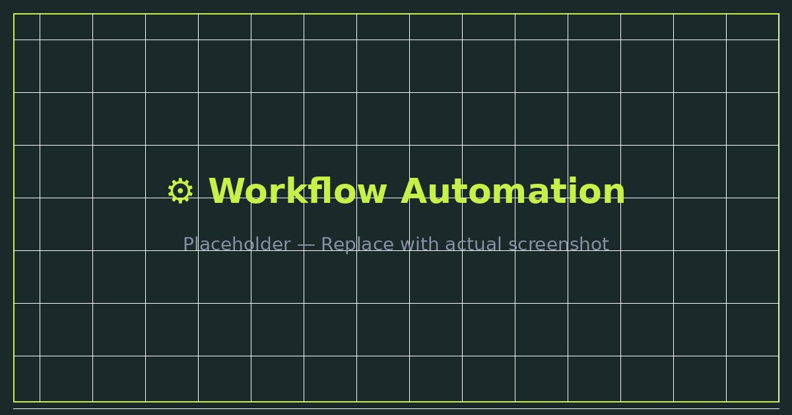
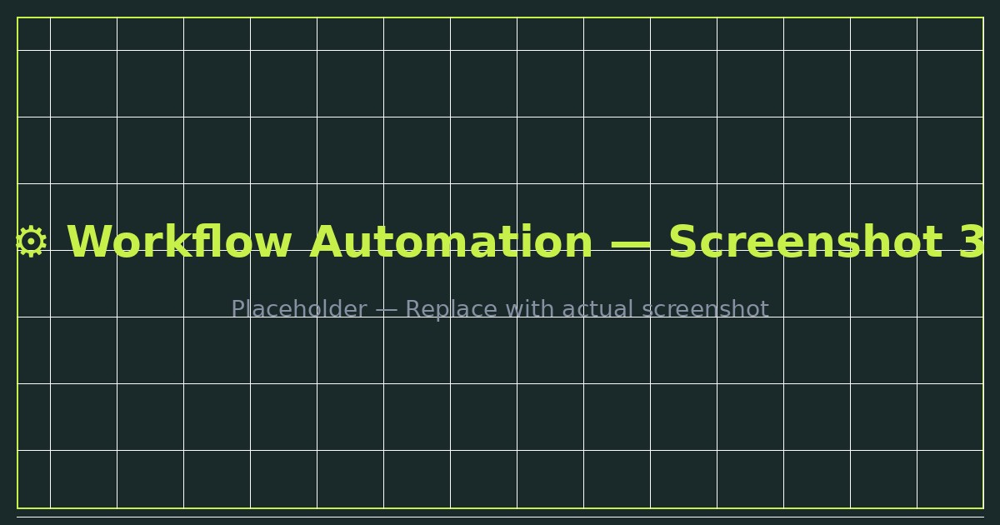

Designed and implemented automation workflows connecting CRM platforms, websites, and business tools — eliminating manual data entry, improving operational visibility, and automating repetitive tasks across the business.

The client's team was spending significant time on manual, repetitive tasks — copying data between platforms, manually updating CRM records, sending follow-up emails, and tracking leads across disconnected tools.
The goal was to design a connected system where data flowed automatically between platforms, reducing manual work and giving the team better visibility into their operations without extra effort.
